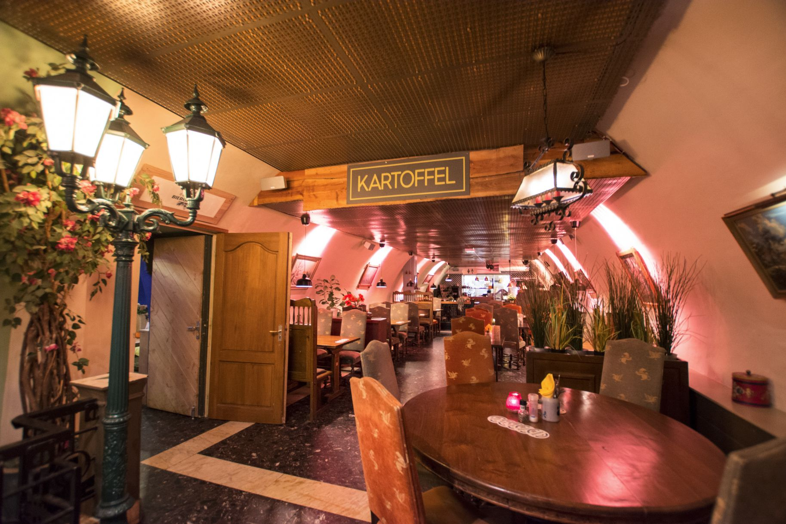
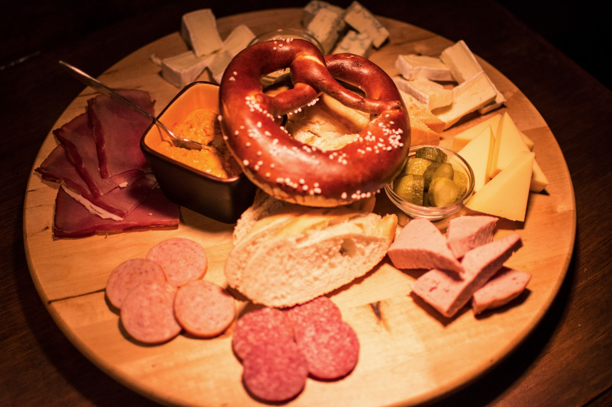

Elke derde zaterdag · 20:30
Live Musik bei Kartoffel
Live muziek met Andrew Reynolds. Ben je erbij?
- 19 dec
- 16 jan
- 20 feb
- 20 mrt
- 17 apr
- 15 mei
- 19 jun

Oudegracht aan de werf 145, Utrecht
Een pretentieloos Duits restaurant in het centrum van Utrecht. Schnitzel, Bratwurst, Schweinshaxe en natuurlijk Duits bier, tot een hele liter aan toe.
Kartoffel is een Duits georiënteerd, pretentieloos restaurant in het centrum van Utrecht. Je geniet hier van de populairste Duitse gerechten en natuurlijk van Duits bier.
Laat je verrassen door de eenvoudige maar degelijke kaart: van een plank met kaas, vleeswaren en een verse pretzel tot een krokante Schweinshaxe met rode kool. Beneden in de kelder aan de werf, met de gracht om de hoek.

Eenvoudig maar degelijk. Flammkuchen is ook vegetarisch te bestellen.
Mandje brood met pretzel en paprikaroomkaas
Met spekjes, rode ui, champignon, kaas, paprika en bieslook
Met gorgonzola, walnoot, peer en rucola
Met geitenkaas, chorizo, zongedroogde tomaten, olijfjes en rucola
Aardappelsoep met room erin en spekjes ernaast
Plankje met diverse kaas- en vleeswaren
Flammkuchen ook vega te bestellen.
Kaasfondue met stokbrood, groenten en rauwkost
Traditionele braadworst en curryworst met zuurkoolstamppot
Gegrilde halve kip met appelmoes, witte koolsalade en aardappelsalade. Solange der Vorrat reicht.
Met gebakken aardappeltjes met spek en ui, witte koolsalade, peperroomsaus en cranberrycompote
Rundergoulash met aardappelpuree en rode kool
Geitenkaassalade met bieslookdressing, komkommer, cherrytomaatjes, croutons, cashewnoten en rösti
Vegetarische braadworst en curryworst met zuurkoolstamppot
Specialiteit van het huis
Krokant gebraden beenham met aardappelpuree, rodewijnsaus en rode kool. Solange der Vorrat reicht.
Wisselt per seizoen
Vraag de bediening naar ons wisselende seizoensgerecht.
Twee pretzels met paprikaroomkaas
Vanille roomijs, warme rode vruchten, stukken chocolade en slagroom
Apfelstrudel met vanillesaus en “Rote Grütze”
Cheesecake met passievruchtencrème
Laagjestaart met frambozencoulis
Prijzen in euro. Wij kunnen geen garanties geven over de aan- of afwezigheid van allergenen; vraag ernaar bij de bediening. De kaart als PDF: Nederlands · English menu. Ook beschikbaar in het Spaans, Italiaans en Russisch.
Van een klein glas tot een hele liter. Met als special het Kartoffel Helles, gebrouwen door Brouwerij Oproer.
Vaste avonden en middagen in de kelder en de biertuin.
Elke derde zaterdag · 20:30
Live muziek met Andrew Reynolds. Ben je erbij?
Elke zondag · 15:00 · t/m 31 januari 2027
Elke week neemt Mad Cow Comedy de biertuin van Kartoffel over voor een zondagmiddag vol humor en gezelligheid. Topcomedians uit de internationale scene, allemaal in het Engels. Perfect voor een middag met vrienden, een date, of gewoon als je zin hebt om te lachen.
Tickets via madcowcomedy.nlElke eerste donderdag van de maand
Verzamel je team, test je kennis en geniet van een avond vol muziek, vragen en gezelligheid. Aanmelden gaat via Upbeatles.
Aanmelden bij UpbeatlesOp donderdag 24 december ben je van harte welkom om kerstavond bij ons te vieren. We serveren onze vertrouwde menukaart, aangevuld met een kerstspecial en natuurlijk een feestelijk kerstdessert.
Daarna gaan we er zelf even tussenuit: van 25 t/m 31 december zijn we gesloten om de feestdagen met onze eigen familie en vrienden door te brengen.
Maar…
1 januari zijn we gewoon weer open!
Kom het nieuwe jaar goed beginnen met een hapje en een drankje.
Auf ein schönes neues Jahr! Team Kartoffel
Oudegracht aan de werf 145
3511 AL Utrecht
Reserveren doe je telefonisch of per mail. Bel ons gerust.
| Ma - wo | 17:00 - 23:00 |
|---|---|
| Donderdag | 17:00 - 00:00 |
| Vrijdag | 17:00 - 01:00 |
| Zaterdag | 12:00 - 01:00 |
| Zondag | 12:00 - 22:00 |
| Ma - vr | 17:00 - 22:00 |
|---|---|
| Zaterdag | 12:00 - 22:00 |
| Zondag | 12:00 - 21:00 |
Gesloten van 25 t/m 31 december, 1 januari weer open.